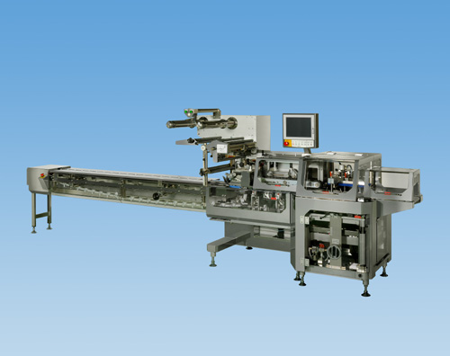

KBF-7000V型 横ピロー包装機シリーズ
より高性能で確実な新機構搭載

特徴
■
より高機能で確実な新機構搭載。
安定したフィルム送りとより確実なシールを実現しました。
マルチモーションシールでフィルムや製品形状に合せたタイトなシールが可能です。
■
使い易さを追求。
オペレーターに配慮した低位置巻き取りスタイルを実現しました。
パネルコンピュータ搭載で品種切換えや設定が簡単に行なえます。
■
衛生的でメンテナンスし易い構造。
ステンレスカバー採用でサニタリー性を向上させました。
カバーを大きく透明化し、内部の稼動状況を確認できる様「見える化」を実現しました。
供給ベルトの簡単脱着など毎日のメンテナンスにもこだわりました。
HOMEへ戻る
Copyright (C) KAWASHIMA PACKAGING MACHINERY CO.,LTD. All Rights Reserved.